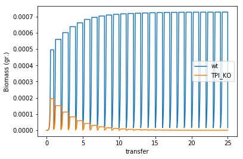

Competition assay and competitive exclusion in serial transfers
Competition experiments are frequently performed in the laboratory to assay, for example, the fitness of a mutant in competition to the wild-type. Here, we simulate one such experiemnt involving E. coli and a nonessential but deleterious mutation involving the deletion of the triose phosphate isomerase reaction from glycolisis.
Load models and create a mutant
We first load our E. coli "core" model and create the mutant in triose phosphate isomerase by setting both upper and lower bounds to zero. We will add both models to our test_tube layout.
# Start by loading required packages, including the COMETS toolbox
import cometspy as c
import cobra.test
import pandas as pd
import matplotlib.pyplot as plt
# load the models and perform the mutation
wt = c.model(cobra.test.create_test_model("ecoli"))
wt.id = 'wt'
mut = c.model(cobra.test.create_test_model("ecoli"))
mut.change_bounds('TPI', 0,0)
mut.id = 'TPI_KO'
# set its initial biomass, 5e-6 gr at coordinate [0,0]
wt.initial_pop = [0, 0, 5e-8]
mut.initial_pop = [0, 0, 5e-8]
Using license file /home/djordje/gurobi.lic
Academic license - for non-commercial use only
Create layout, add models and set up media composition
We create an empty layout ("test_tube") and set the initial nutrient supply.
# create an empty layout
test_tube = c.layout()
# add the models to the test tube
test_tube.add_model(wt)
test_tube.add_model(mut)
building empty layout model
models will need to be added with layout.add_model()
Set the media composition by adding glucose and the inorganic nutrients required for this model (ammonia, phosphate) and oxygen. These inorganic nutrients will be considered as "static" by the simulation, with a value of 1000 that never depletes. Considering metabolites as "static" is the way COMETS has to simulate an unlimited supply of metabolites.
# Add glucose to the media
test_tube.set_specific_metabolite('glc__D_e', 0.01)
# Add typical trace metabolites and oxygen coli as static
trace_metabolites = ['ca2_e', 'cl_e', 'cobalt2_e', 'cu2_e', 'fe2_e', 'fe3_e', 'h_e', 'k_e', 'h2o_e', 'mg2_e',
'mn2_e', 'mobd_e', 'na1_e', 'ni2_e', 'nh4_e', 'o2_e', 'pi_e', 'so4_e', 'zn2_e']
for i in trace_metabolites:
test_tube.set_specific_metabolite(i, 1000)
test_tube.set_specific_static(i, 1000)
Set up simulation parameters
We next create a parameters object and modify needed parameters - in this case only the number of cycles the simulation runs.
comp_params = c.params()
comp_params.set_param('maxCycles', 240)
Run the simulation
Finally, we create the comets object using the above created layout and parameters, and run the competition assay.
comp_assay = c.comets(test_tube, comp_params)
comp_assay.run()
Running COMETS simulation ...
Done!
We now plot the biomasses of these two genotypes in coculture.
biomass = comp_assay.total_biomass
biomass['t'] = biomass['cycle'] * comp_assay.parameters.all_params['timeStep']
myplot = biomass.drop(columns=['cycle']).plot(x = 't')
myplot.set_ylabel("Biomass (gr.)")

We can quantitatively analyze the results. For example, we can compute the competitive fitness of the mutant respect to the wild-type as the ratio of the biomass increase of the mutant divided by that of the wild-type:
cfit = (biomass.loc[biomass['t'] == 24, 'TPI_KO'].iloc[0]/biomass.loc[biomass['t'] == 0, 'TPI_KO'].iloc[0])/(biomass.loc[biomass['t'] == 24, 'wt'].iloc[0]/biomass.loc[biomass['t'] == 0, 'wt'].iloc[0])
cfit
0.39378816074777145
Simulating serial transfers
Using COMETS we can also simulate a serial tranfer competition between these two mutants. We will just modify the parameters, increasing the total simulation time and including batch transfers of 1% every 24h, but we will use the same test_tube layout as before.
serial_params = c.params()
serial_params.set_param('maxCycles', 240*25) # simulate 4 serial transfers of 24h each
serial_params.set_param('batchDilution', True)
serial_params.set_param('dilFactor', 0.01)
serial_params.set_param('dilTime', 24)
We run the simulation
serial_expt = c.comets(test_tube, serial_params)
serial_expt.JAVA_CLASSPATH = comp_assay.JAVA_CLASSPATH
serial_expt.run()
Running COMETS simulation ...
Done!
Now plot the biomass of the two species during the experiment
biomass = serial_expt.total_biomass
biomass['transfer'] = biomass['cycle'] * comp_assay.parameters.all_params['timeStep']/24
myplot = biomass.drop(columns=['cycle']).plot(x = 'transfer')
myplot.set_ylabel("Biomass (gr.)")
